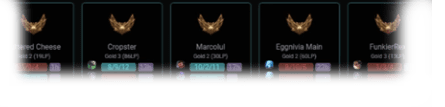

Lytical provides fast OP.GG style match history for any player.
Kills, CS per Minute, Vision Score, and Objectives.
Analyze your contribution to your own games or search high ranked players to increase your impact
and win more games!
Multisearch will automatically scout your teammates in champion select and your opponents when in
game. Profile lookup tools are common on NA/EU/KR servers to help avoid poor quality games. Lytical
is the tool for the job to quickly understand your teammates and opponents strengths and weaknesses.

Lytical utilizes builtin API's inside of the League of Legends client. This allows
our application to function on all regions, including all Garena and WeGame regions.
If you are able to help translate Lytical to another language (no programming experience required)
please make an issue on GitHub
The Lytical app is forever free and open source. It was created as an All-In-One replacement for
regions that don't have
access to statistics sites like OP.GG or Blitz.gg.
Built Using Vue.JS + Electron Lytical is fast and memory efficient. Any PC can run Lytical in the
background
with no performance impact in game for League of Legends.
This application is released under the Open Source GPLv2 license. You are welcome to contribute to
this project in any way
you can.
Lytical is an alternative League of Legends statistics app like OP.GG for Garena. Our platform offers summoner searching, profiles, lobby multisearch, game statistics and more. If you're looking for OP.GG on Garena (SEA) or WeGame (CN) Lytical is right for you.
There is currently no plan to have a web acceisble share feature. Currently the best way to share a match is taking a screenshot and linking that.
No. Our app only interfaces with builtin and exposed LCU API endpoints. Lytical is forced to follow the same rules and rate limits as the official client. It functions more like a better user interface for the data that already exists when searching in League of Legends than a traditional statistics database site. Our app has even been approved in the Riot Developer Program
Lytical does not store, log, or otherwise collect any information on its users.
Please create an issue on GitHub or post a comment in the Request channel on Discord
Try running as Administrator. If that doesn't work use our Discord server to ask one of our community members to help
It would be trivial to adapt this application to macOS if there is demand. Share your feedback on GitHub or Discord
created with ❤️ by @downthecrop